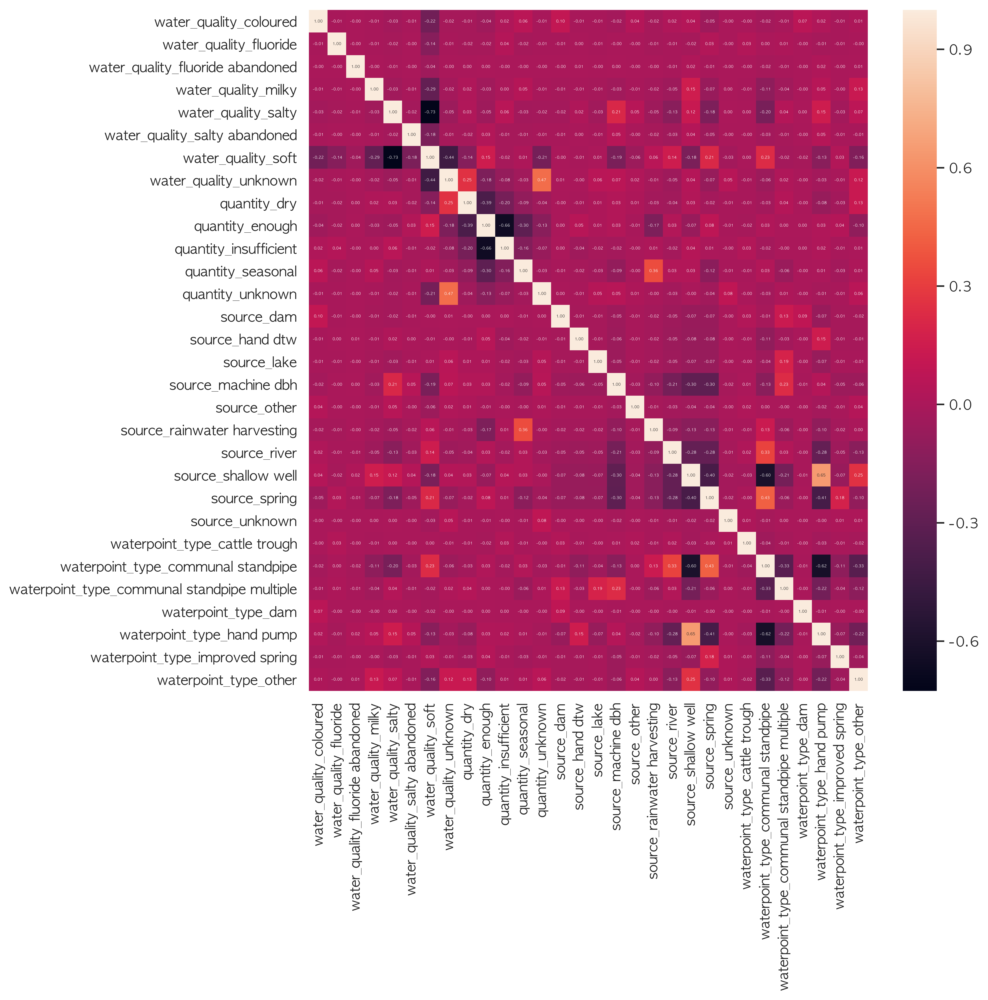
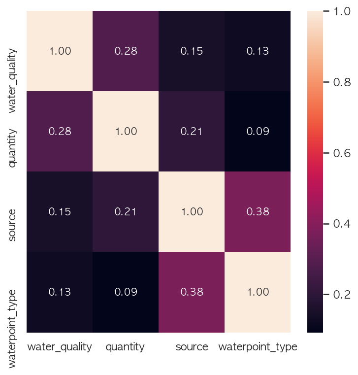
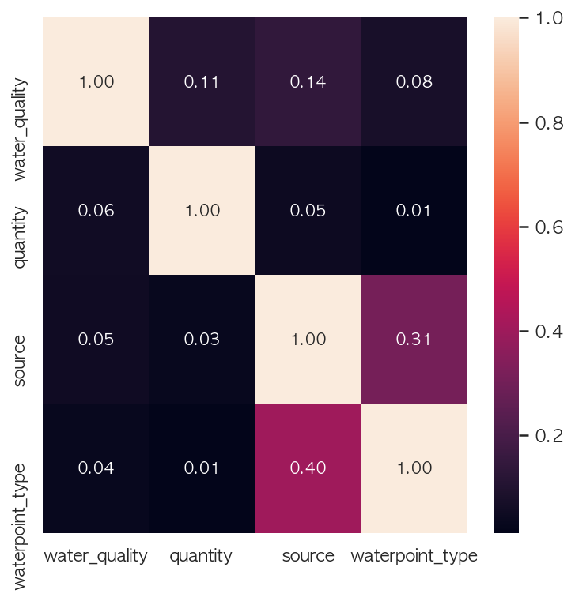

All About Correlation between Categorical Variables - Theil’s U
앞에서 알아본 카이제곱 연관성 검정 (chi square test of association)은 두 변수사이의 관계가 통계적으로 유의미한지 (statistically significant)를 알아볼 수 있는 검정이었습니다. 하지만 이 검정을 통해서는 두 변수간의 관계가 얼만큼 중요한지에 대해서는 알려주지 않습니다.
상관 관계 (Correlation)란?
본론으로 들어가기 전, 간단히 상관 관계 (correlation)에 대해 짚고 넘어갑니다. 상관 관계란 “두 변수간의 관계의 강도” 입니다. 몸무계와 키 사이의 상관 관계나 아파트의 넓이와 가격간의 상관 관계의 강도를 예로 들 수 있습니다. 강한 상관 관계를 예상해볼 수 있습니다.
우리가 잘 알고 있는 피어슨 상관 계수 Pearson correlation coefficient는 두 연속형 변수 (continuous variable)간의 선형 상관 관계를 나타내는 수치이며 -1과 1사이의 값을 지닙니다. 두 변수간의 피어슨 상관 계수를 계산하는 수식은 아래와 같습니다. 보면 두 변수 (A, B) 의 공분산 Covariance ($\text Cov$) 과 각 변수의 표준편차($\sigma$)가 피어슨 상관 계수 ($\rho$)를 구하는 식에 들어 갑니다.
하지만 카테고리 변수에서는 평균과 분산의 개념이 존재하지 않습니다. 색을 나타내는 변수가 있을 때, 이 변수의 값들이 빨강, 노랑, 초록이라면 빨강에서 색의 평균을 어떻게 뺄 수 있을까요? 불가능 하다는 것을 바로 확인할 수 있습니다.
이러한 이슈를 해결하기 위해 좋은 방법은 아니지만 원핫인코딩 (one-hot encoding)으로 카테고리 변수를 변환시킬 수 있습니다. 그 후, 피어슨 상관 계수를 계산합니다. 하지만 이 방법은 아래에서 곧 보겠지만, 분석하기가 아주 힘들어 집니다. 제가 가지고 있는 탄자니아 식수개발사업 관련 데이터에서 4개의 카테고리 변수 ‘water_quality’, ‘quality_group’, ‘quantity’, ‘quantity_group’을 원핫인코딩 하여 히트맵을 통해 상관관계를 나타낸 시도가 아래에 나와있습니다.
1 | import pandas as pd |
| water_quality | quantity | source | waterpoint_type | |
|---|---|---|---|---|
| id | ||||
| 69572 | soft | enough | spring | communal standpipe |
| 8776 | soft | insufficient | rainwater harvesting | communal standpipe |
| 34310 | soft | enough | dam | communal standpipe multiple |
| 67743 | soft | dry | machine dbh | communal standpipe multiple |
| 19728 | soft | seasonal | rainwater harvesting | communal standpipe |
1 | # 4개의 카테고리 변수를 원핫 인코딩 해 줍니다 |

모든 카테고리 값들이 원핫인코딩으로 인해 하나의 변수가 되었기 때문에 카테고리 변수들의 모든 값에 대한 메트릭스가 만들어 졌습니다. 시간도 꽤나 걸렸고, 해석하기도 어렵습니다. 이 데이터셋에는 30개가 넘는 카테고리 변수들이 있는데 이 카테고리 변수들을 원핫인코딩을 통해 모든 변수 간의 상관 관계를 알아본다는 것은 불가능해 보입니다.
카테고리 변수를 위한 연관성 측도 (correlation measure for categorical variables)
명목형 카테고리 변수에 적용될 수 있는 연관성 측도 (measure of association)가 필요합니다. 두가지가 있는데 하나는 Cramér’s V 와 Theil’s U 가 있습니다. 이 둘의 차이점은 아래에서 다룹니다.
Cramér’s V
Cramér’s V는 두개의 명목형 카테고리 변수간의 연관성 측도이며 지난 시간에 다룬 Pearson의 Chi squared Test를 기반으로 합니다.
Cramér’s V의 특징은:
1) 0과 1사이의 값으로 연관성의 세기를 나타냅니다. 0은 연관성이 없다이고 1은 완전한 연관성, 즉 두 변수가 같다를 의미합니다.
2) Pearson correlation coefficient처럼 두 변수의 관계가 대칭입니다. 즉, 두 변수 A, B의 연관성의 세기와 B, A의 연관성의 세기가 같다는 것을 의미합니다.
아래는 wikipedia Cramér’s V 페이지에 나와있는 bias corrected Cramér’s V 수식을 이용하여 함수를 만들어 보았습니다.
1 | def cramers_v(a, b): |
아래는 위의 함수를 이용하여 연관성을 계산한 히트맵입니다. 훨씬 더 깔끔하고 이해하기 쉽다는 것을 확인할 수 있습니다. 전반적으로 상관관계가 높은 변수들은 없지만, ‘source’ (우물의 원천지)와 ‘waterpoint_type’ (우물을 끌어올리는 펌프의 종류)가 그 중 높은 연관성을 가지고 있다는 것을 확인할 수 있습니다. 또한 관계의 대칭으로 인해 Pearson correlation coefficient와 같이 히트맵이 대칭을 이룬다는 것도 보입니다.
1 | columns = water_df.columns |

Theil’s U - Uncertainty Coefficient
Theil’s U 또한 두개의 명목형 카테고리 변수간의 연관성 측도이며 정보 엔트로피를 기반으로 계산 합니다.
그렇다면 또 다른 연관성 측도인 Theil’s U는 Cramér’s V와 어떤 점이 다를까요?
아래에 예제를 통해 다른점을 알아보겠습니다. 아래의 테이블에서 A라는 카테고리 변수는 색을 나타내고 있고 B에는 사물을 나타냅니다.
| A | B |
|---|---|
| 빨강 | 사과 |
| 빨강 | 장미 |
| 빨강 | 사과 |
| 초록 | 브로콜리 |
| 초록 | 브로콜리 |
| 초록 | 올리브 |
만약 우리가 A의 값을 안다고 해도 B의 값을 확실히 알 수 없습니다.
빨강 → 사과 혹은 장미
초록 → 브로콜리 혹은 올리브
하지만 반대로 B의 값을 안다면, A의 값을 확실히 알 수 있게 됩니다.
사과 → 빨강
장미 → 빨강
브로콜리 → 초록
올리브 → 초록
이 정보는 위의 Cramér’s V를 이용하면 두 변수의 관계가 대칭이기 때문에 전혀 알아낼 수가 없기에 비대칭적인 연관성 측도가 필요합니다. 이 측도가 바로 Theil’s U입니다.
Theil’s U는 Uncertainty Coefficient (불확실성 계수) 라고 부르기도 하며 두 변수 사이의 조건부 엔트로피 (conditional entropy)를 기반으로 계산 됩니다. 쉽게 말해, 변수 A의 값이 알려진다면 어떠한 변수 B의 값들이 나올수 있는지, 얼만큼 나오는지를 조건부 엔트로피로 확인할 수 있습니다. Cramér’s V 와 같이 Theil’s U 또한 0과 1사이의 값을 가지지만 비대칭적인 특성을 가지고 있습니다. 즉 Theil’s U는 두 변수 A와 B의 순서가 바뀌면 조건부 엔트로피로 인하여 $U(A, B) \neq U(B, A)$ 가 되지만 Cramér’s V 의 경우는 대칭이기 때문에 $V(A, B) = V(B, A)$ 가 됩니다.
아래는 조건부 앤트로피와 Theil’s U를 함수화 했으며, 이 값으로 다시 위의 탄자니아 식수개발사업 관련 데이터에서 가져온 4개의 변수 사이의 연관성을 Theil’s U를 사용하여 히트맵으로 나타내보겠습니다.
1 | from collections import Counter |
아래의 히트맵은 위의 Cramér’s V와 다른 인사이트를 보여 줍니다. 예를들어 위와 같이 ‘waterpoint_type’이 주어졌을 때, ‘source’와의 연관성의 강도는 0.40 이지만 ‘source’가 주어졌을 때, ‘waterpoint_type’과의 연관성의 강도는 0.31 으로 대칭이 아님을 확인할 수 있습니다. 즉, ‘waterpoint_type’을 아는 것이 ‘source’에 대해 조금 더 많은 정보를 주지만, ‘source’를 아는 것은 ‘waterpoint_type’를 아는 것에 더 적은 정보를 제공 합니다. 그러므로 Theil’s U가 좀 더 두 변수 간의 관계를 잘 보여준다고 할 수 있습니다.
1 | theilu_corr = pd.DataFrame(index=columns, columns=columns) |

이렇게 해서 카테고리 변수간의 상관관계에 있어서 Cramér’s V 와 Theil’s U에 대해 알아보았습니다. Cramér’s V 와 Theil’s U는 계산이 아주 빠르고 쉽게 이해할 수 있는 인사이트를 제공하므로 더이상 카테고리 변수를 모두 원핫으로 바꾸어 오랜 시간에 걸쳐서 상관관계를 보지 않아도 되겠습니다. 카테고리 변수가 나왔을 때 더 좀 더 풍부한 분석을 해 보시길 바랍니다.